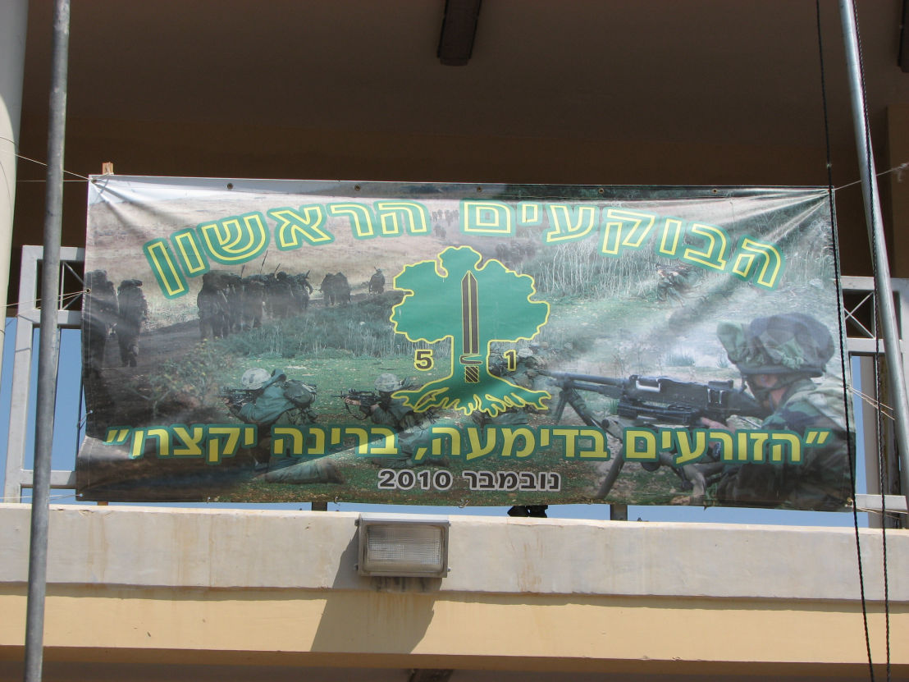
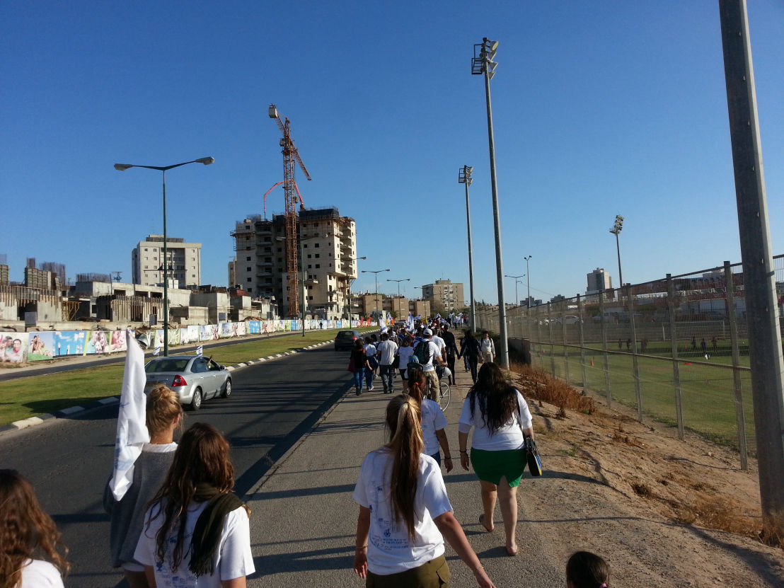
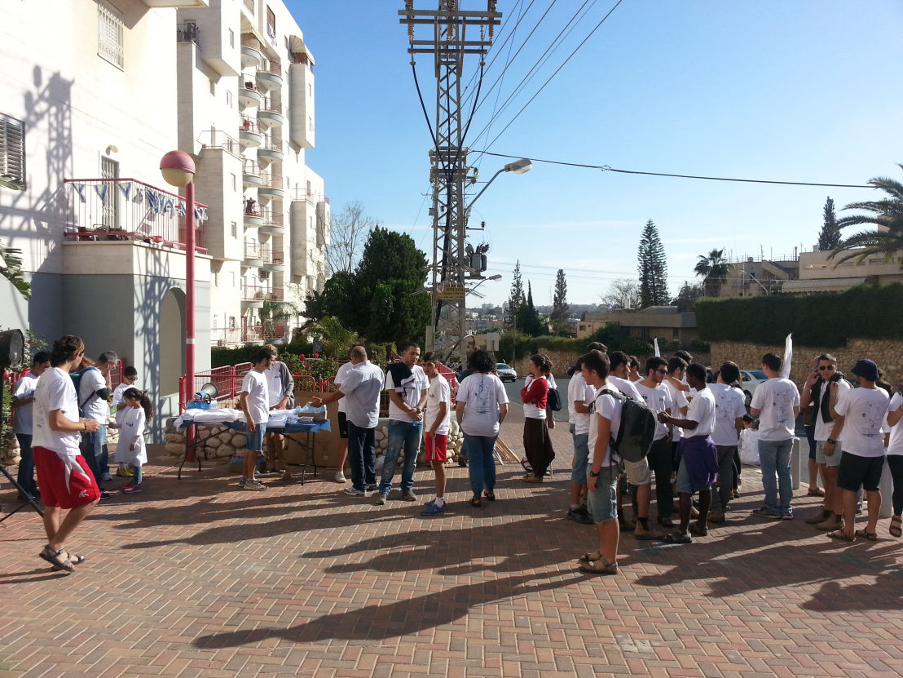
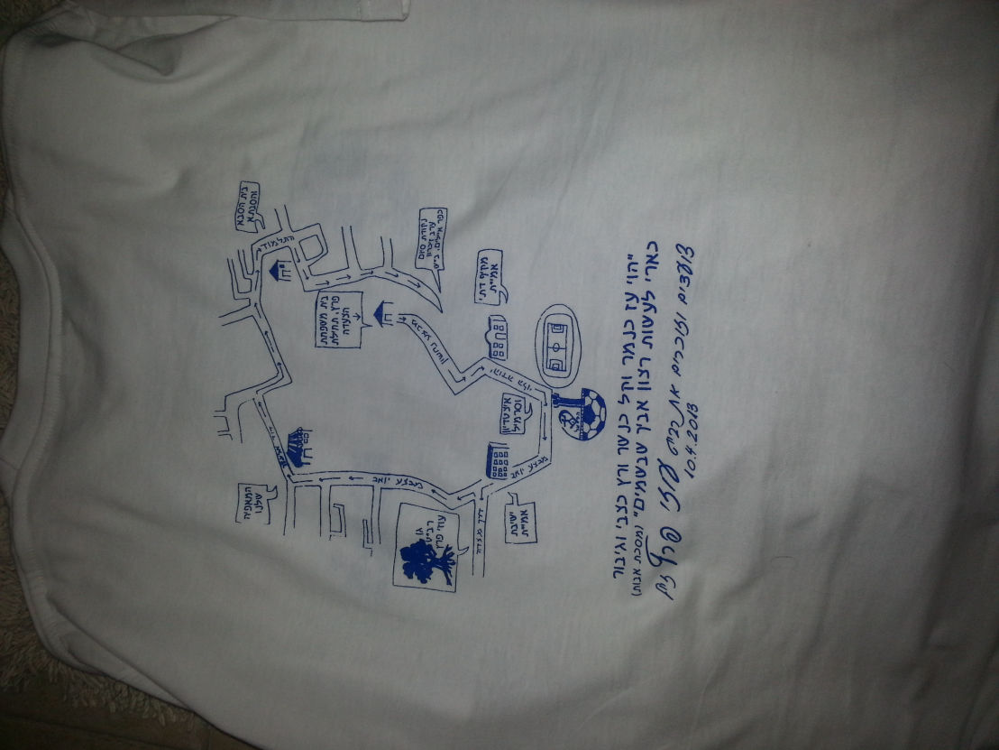

Yahav Brami
צור קשר
אודות
מסע על שם עוזי בא"ח גולני
את המסע בבא"ח גולני קיימו גדוד 51 שהיה בשנת 2010, המסע התקיים לזכרו של עוזי

צעדת איילים לזכרו של עוזי
צעדת איילים אורגנה ע"י עמותת איילים והצעדה התקיימה בכל המקומות שהיו חשובים עבור עוזי , הצעדה התקיימה ב2013



טקס לזכרו של עוזי ז"ל
. הטקס נערך ביום הזיכרון 2021 ע"י ארגון נאיר שבניהולו של יאיר שושן
Website
was made with Mobirise web templates